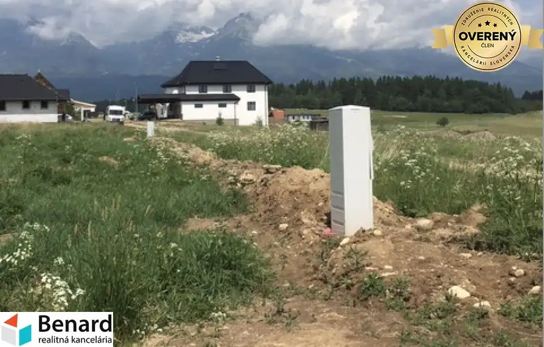
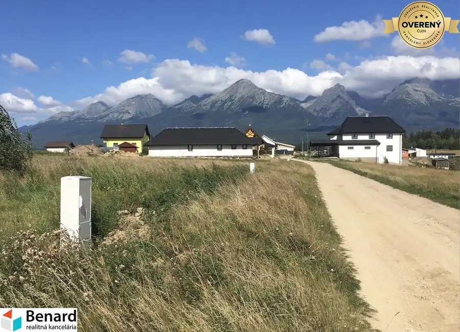
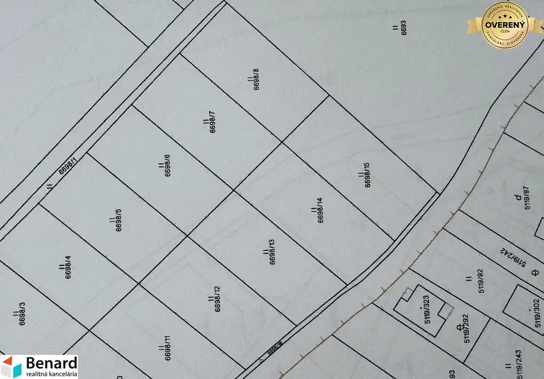
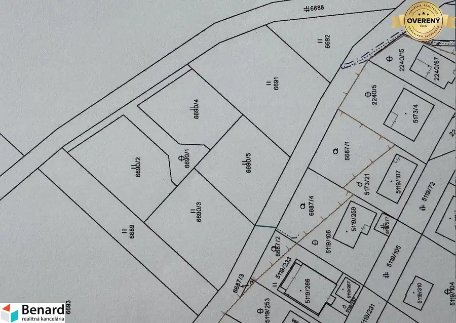

Stavebné pozemky vo vyhľadávanej lokalite obci Mlynica (Pieskovisko)
Mlynica





- Plocha653 m²
- Poschodie0.
- Stavpôvodný
- Vlastníctvoosobné
O nehnuteľnosti
Pozemky sú podľa platného územného plánu určené na výstavbu rodinných domov so zastavanosťou 35 %. Každý pozemok má šírku približne 20 metrov, čo poskytuje dostatok priestoru na komfortnú výstavbu.
Základné informácie:
výmery pozemkov od 653 m² do 1 056 m²,
spolu je v ponuke 13 stavebných pozemkov,
rovinatý terén,
obecná prístupová cesta,
možnosť okamžitej výstavby.
Inžinierske siete:
elektrina na hranici pozemkov,
vodovod a kanalizácia sú v procese realizácie a ich vybudovanie je plánované v najbližšom období.
Na vyžiadanie Vám radi zašleme územnoplánovaciu informáciu vydanú obcou, ktorá potvrdzuje určenie pozemkov na výstavbu rodinných domov.
Výhody lokality:
pokojná lokalita s novou zástavbou rodinných domov,
krásne výhľady na panorámu Vysokých Tatier,
výborná dostupnosť do Popradu, Svitu aj na diaľnicu D1,
ideálne spojenie pokojného bývania s rýchlou dostupnosťou do mesta,
kompletná občianska vybavenosť v blízkom okolí,
atraktívna lokalita vhodná na celoročné bývanie aj ako investícia,
množstvo možností na turistiku, cyklistiku, lyžovanie a ďalšie voľnočasové aktivity v regióne Vysokých Tatier.
Ak hľadáte miesto pre výstavbu svojho vysnívaného domova v pokojnom prostredí s výbornou dostupnosťou, tieto pozemky predstavujú výnimočnú príležitosť.
V prípade záujmu o viac informácií alebo obhliadku nás neváhajte kontaktovať. Radi Vám poskytneme všetky potrebné informácie a pomôžeme s výberom vhodného pozemku.
Cena: 93€/m2
Pri pozemkoch s parc. č.:
6698/4 s rozlohou 901m2,
6698/5 s rozlohou 946 m2,
6698/6 s rozlohou 934 m2,
6698/7 s rozlohou 1029 m2,
6698/8 s rozlohou 1054 m2,
6690/2 s rozlohou 848 m2,
6690/3 s rozlohou 955 m2,
6690/4 s rozlohou 653 m2,
a 6690/5 s rozlohou 754 m2,
plus doplatok za kanál v sume 10.000€ a doplatok za vodu 10.000€ po zrealizovaní (v časovom horizonte 2-3 rokov), v odloženej platbe v rámci Kúpnej zmluvy.
Cena: 103€/m2
Pri pozemkoch s parc. č.:
6698/12 s rozlohou 957 m2,
6698/13 s rozlohou 974 m2,
6698/14 s rozlohou 1056 m2,
a 6698/15 s rozlohou 1056 m2,
plus doplatok za vodu 10.000€ po zrealizovaní, v odloženej platbe v rámci Kúpnej zmluvy.
K týmto parcelám sa bude v mesiacoch 09/2026 a 10/2026 realizovať kanalizácia.
Parametre
- Rozloha pozemku
- 653 m²
- Poschodie
- prízemie
- Vlastníctvo
- osobné
- Stav
- pôvodný
- Status
- aktívne
- Odvoz odpadu
- nie
- Voda
- studňa a vodovod
- El. napätie
- 230V
- Plyn
- nie
- Kanalizácia
- nie
- Internet
- nie
- Inžinierske siete
- áno
- Káblová televízia
- nie
- Terén
- rovina
- Prístupová cesta
- neupravená cesta
- Pripravené na výstavbu
- vydané územné rozhodnutie
- Dátum zverejnenia
- 2026-08-06
Kde to je
Mohlo by Vás zaujímať
 ApartmányNové
390 000 €APARTMÁN na Štrbskom Plese
Strbske-pleso
2-izbový55.95 m²3. podlažie
ApartmányNové
390 000 €APARTMÁN na Štrbskom Plese
Strbske-pleso
2-izbový55.95 m²3. podlažie
 BytNové
290 000 €Zariadený 2-iz. BYT v Tatranskej Štrbe s krásnym výhľadom na Vys.Tatry
Tatranska-strba, Tatranská Štrba
2-izbový57.74 m²3. podlažie
BytNové
290 000 €Zariadený 2-iz. BYT v Tatranskej Štrbe s krásnym výhľadom na Vys.Tatry
Tatranska-strba, Tatranská Štrba
2-izbový57.74 m²3. podlažie
 BytNové
780,- €Na prenájom 2-izbový byt v novostavbe Poprad-Veľká
Poprad
2-izbový56.45 m²
BytNové
780,- €Na prenájom 2-izbový byt v novostavbe Poprad-Veľká
Poprad
2-izbový56.45 m²